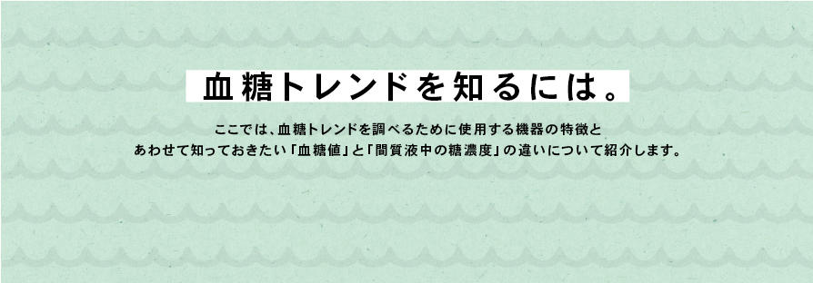

血糖トレンドを知るには。
ここでは、血糖トレンドを調べるために使用する機器の特徴と、あわせて知っておきたい「血糖値」と「間質液中の糖濃度」の違いについて紹介します。

監修：西村 理明 先生（東京慈恵会医科大学糖尿病・代謝・内分泌内科）
血糖トレンドを調べる際に使用する機器の違い
血糖値は、健康な人でも1日のうちに 70〜140mg/dL程度の間で変動していますが、糖尿病患者さんの場合、その変動幅はずっと大きくなります。通院時に測定する検査値だけでは、日常の生活下でどのように血糖値が揺れ動いているのかを知ることはできません。しかし、下記にあげたような機器を利用すれば、血糖値の変動をより詳しく知ることができます。
それぞれの機器の違いを理解し、血糖コントロールの改善に向け正しく活用しましょう。
血糖自己測定器（SMBG）
測定しているもの
測定方法
- 穿刺針を用いて指先等から採血する
- 血液を、チップ（血糖測定電極）に塗布する
- 数秒〜10秒程度経過後、機器のモニターに血糖値が表示される
測定期間
チップ（血糖測定電極）の枚数による
測定の頻度
使用者の測定回数による
特 徴
- 「血糖値」（血液中のブドウ糖濃度）を測定している
- 測定ごとに、チップ（血糖測定電極）と穿刺針が必要。また、測定のたびに穿刺による痛みを伴う
- 1日7、8回測定することにより、血糖トレンドをある程度調べることはできるが、測定回数が増えることによる負担は大きくなる
対象となる患者さん
- 血糖値を下げる注射薬（インスリン製剤とGLP-1受容体作動薬）を使用中の患者
- 妊娠中の糖尿病患者、妊娠糖尿病の患者
※保険診療上の算定要件があります。詳しくは医師、もしくはかかりつけの医療機関にお問い合わせください。
Continuous Glucose Monitoring（CGM）
測定しているもの
皮下組織間質液中の糖濃度を測定し、ここから血糖値を推定した値 「血糖値」と「間質液中の糖濃度」の違いはこちら ▶
測定方法
- 腹部などに専用のセンサーとデータの記録機器などを装着する
- 測定機器、モバイル機器、インスリンポンプのいずれかのモニターに表示
※プロフェッショナルCGMの場合には、数値の確認は医療機関でのみ可能
測定期間
3～7日間
測定の頻度
持続的
特 徴
- 血糖値自体を測定しているのではなく、「間質液の糖濃度」から「血糖値を推測した数値」を表示している
- 測定期間中、センサーは装着したままにできる
- 測定回数が格段に多く、連続的に記録できる。数日間にわたる血糖の日内変動の傾向をみることができる
- 機器の較正のために、1日数回SMBGを行う必要がある
対象となる患者さん
- プロフェッショナルCGM
- １型糖尿病患者
- 重篤な有害事象が起きている血糖コントロールが不安定な２型糖尿病患者
- リアルタイムCGM
- 急性発症１型または劇症１型の糖尿病患者
- インスリンポンプ（SAP以外）使用者
- SAP
- インスリンポンプ使用者
※保険診療上の算定要件があります。詳しくは医師、もしくはかかりつけの医療機関にお問い合わせください。
intermittently scanned CGM（isCGM）
通称：フラッシュグルコースモニタリング
測定しているもの
皮下組織間質液中の糖濃度を測定し、ここから血糖値を推定した値 「血糖値」と「間質液中の糖濃度」の違いはこちら ▶
測定方法
- 上腕の後ろ側に専用のセンサーを装着する
- センサー部に自動的に数値が記録される
- リーダーをセンサーにかざしてスキャンすると、リーダーのモニターに数値が表示される
※医療従事者用システムの場合は、医療機関でのみ数値の確認が可能
測定期間
最長14日間（8時間ごとのスキャンが必要。医療従事者用システムでは不要）
測定の頻度
持続的
特 徴
- 血糖値自体を測定しているのではなく、「間質液の糖濃度」から「血糖値を推測した数値」を表示している
- 測定期間中、センサーは装着したままにできる。センサーは耐水性なので入浴、水泳、運動も行える（ただし、水深、浸水時間に制限あり）
- 測定回数が格段に多く、連続的に記録できる。最長14日間にわたる血糖の日内変動の傾向をみることができる
- 工場出荷前にすでに較正されており、SMBGの測定値を用いた較正は不要（低血糖／高血糖が疑われる場合や測定値と一致しない症状がある時などは、SMBGが必要）
対象となる患者さん
- 血糖値を下げる注射薬（インスリン製剤とGLP-1受容体作動薬）を使用中の患者
- 妊娠中の糖尿病患者、妊娠糖尿病の患者
※保険診療上の算定要件があります。詳しくは医師、もしくはかかりつけの医療機関にお問い合わせください。
| 機器の種類 | 血糖自己測定器（SMBG） | Continuous Glucose Monitoring（CGM） | intermittently scanned CGM（isCGM） 通称：フラッシュグルコースモニタリング |
|---|---|---|---|
| 詳しくはこちら ▶ （医療従事者向け） |
詳しくはこちら ▶ （医療従事者向け） |
詳しくはこちら ▶ （医療従事者向け） |
|
| 測定しているもの | 血糖値 | 皮下組織間質液中の糖濃度を測定し、ここから血糖値を推定した値 | |
| 「血糖値」と「間質液中の糖濃度」の違いはこちら ▶ | |||
| 測定方法 |
|
|
|
| 測定期間 | チップ（血糖測定電極）の枚数による | 3～7日間 | 最長14日間（8時間ごとのスキャンが必要。医療従事者用システムでは不要） |
| 測定の頻度 | 使用者の測定回数による | 持続的 | |
| 特 徴 |
|
|
|
| 対象となる 患者さん ※各機器には保険診療上の算定要件があります。詳しくは医師、もしくはかかりつけの医療機関にお問い合わせください。 |
|
|
|
※上記の情報により、治療方法や現在使用中の医療機器について疑問などを持たれた場合には、主治医に必ず相談してください。